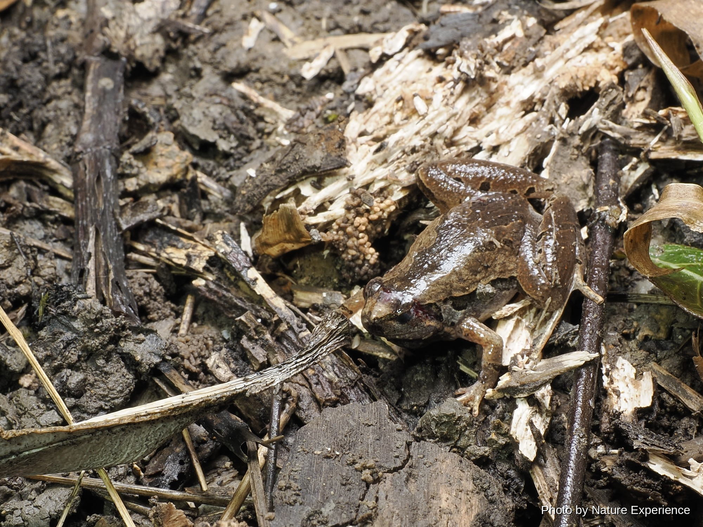
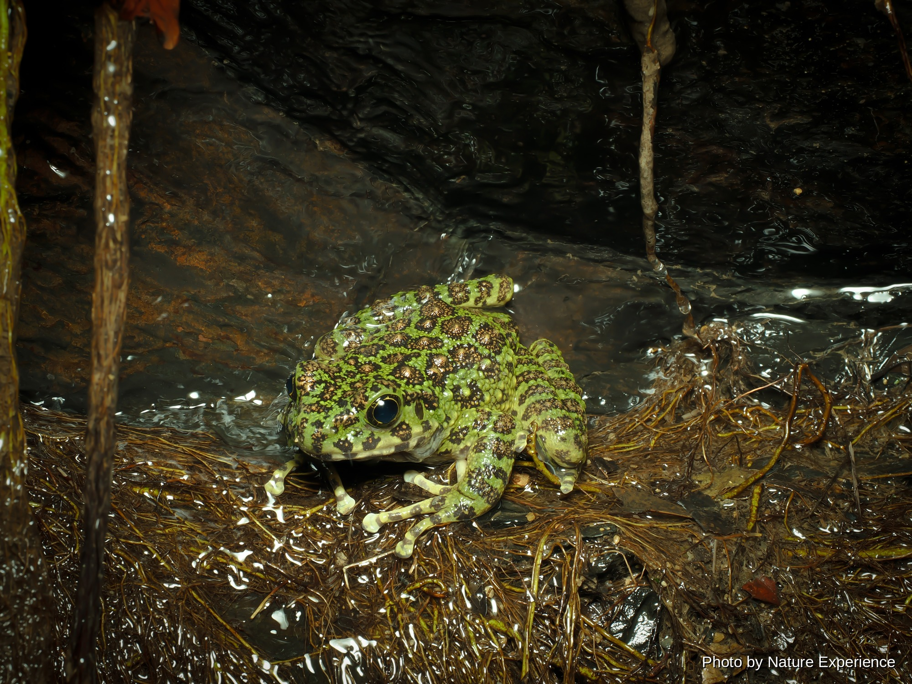
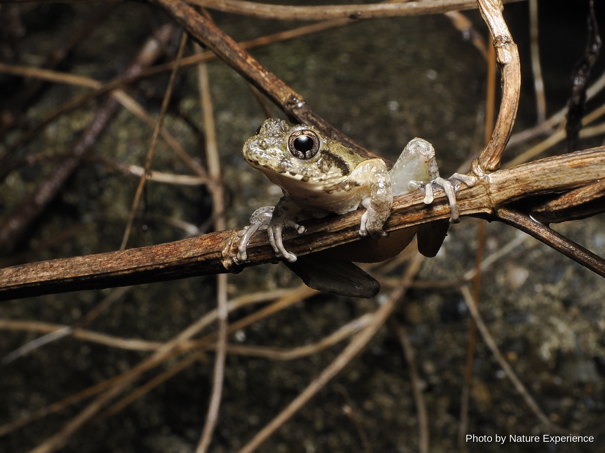

アマミアカガエル
大きさ3.2〜4.6cm 繁殖時期11月から1月。平地から山地までの森林、河川周辺に生息。繁殖時期になると小さな池や湧水の溜まり場などに集まる。林道にも出てくる個体が見られ。

CREATURES / KAERU
雨の夜、森や水辺に響くさまざまな鳴き声。奄美大島には、この島ならではのカエルたちが暮らしています。
ABOUT
奄美大島には、森の中や渓流、水田など、さまざまな環境で暮らすカエルたちがいます。雨の降る夜には、それぞれ異なる鳴き声が森に響きます。
島にしかいない固有の種類も多く、見た目や大きさ、暮らす場所はさまざまです。木の上で過ごすもの、水辺で見つかるもの、落ち葉の下に隠れているものもいます。
出会えたときは、光を長く当て続けず、静かにその姿や鳴き声を楽しんでください。
水辺や卵、幼生を傷つけないよう、見つけても触らず、足元に注意して静かに観察してください。
FROGS OF AMAMI
奄美大島の森や水辺で出会えるカエルを紹介します。写真や名前をクリックすると、それぞれの詳しいページを見ることができます。
大きさ3.2〜4.6cm 繁殖時期11月から1月。平地から山地までの森林、河川周辺に生息。繁殖時期になると小さな池や湧水の溜まり場などに集まる。林道にも出てくる個体が見られ。
大きさ4.5〜7.7cm 繁殖時期12月下旬から5月頃。低地から山地まで分布し、池や水田などの止水域周辺の森に生息。樹上の枝の上や岸辺の草などに白い泡状の卵塊を産み付ける。

大きさ5.6〜10.1cm 繁殖時期10月から5月。山地にある渓流の周辺に生息。スマートで姿勢がよく、慣れてくると遠目からでも判別できるようになる。色彩も豊かでバリエーショ。

大きさ3〜4cm 繁殖時期3月から6月。平地の森林、藪、畑に生息し水田などの止水域に産卵。産卵時期になると水田近くで大合唱する。木の枝先など少し高い所にいて、たくさん鳴いて。
大きさ2.2〜3.2cm 周年繁殖(主に3月から7月)。海岸近くの低地から山地、林縁部や草地、人家周辺など幅広く生息。頭が小さく足が太いので上から見ると三角形。日本で1番小。

大きさ7.4〜13.7cm 繁殖時期2月末から6月頃。山地の源流の穏やかな流れの沢に生息。日本一美しいカエルと言われ、鹿児島県の天然記念物・国内希少野生動物種に指定。卵を含。

大きさ8〜12.4cm 繁殖時期4月から10月。主に山地に生息するが、農地や公園などで見られることもある。オスの方が大きくなり、国内に移入されたウシガエルを除けば日本で1番。

大きさ2.5〜4cm 繁殖時期4月から10月。渓流から市街地の水たまりでも適応し、奄美大島では1番見かけるカエル。オスはとても美しい黄色で鳴き声も美しい。

EXPLORE MORE
カテゴリーを選んで、奄美大島の生き物をもっと見てみましょう。
NIGHT FIELD TOUR
ガイドと一緒に、生き物を探しながら夜の森を観察できます。
ナイトツアーの内容や料金はこちら →